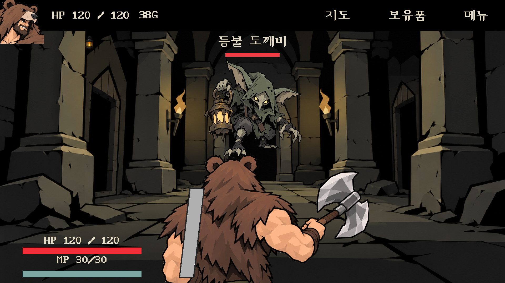
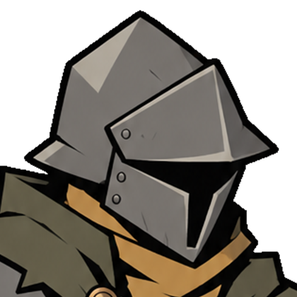
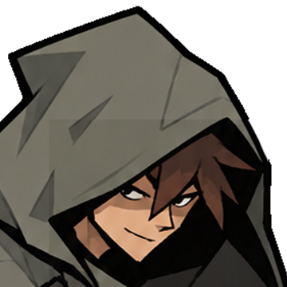
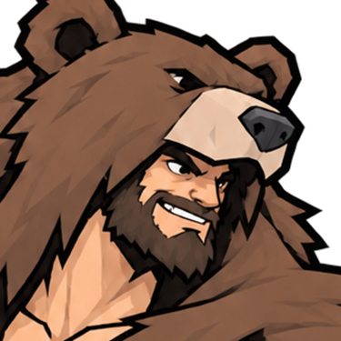
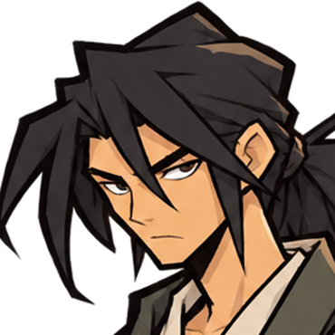
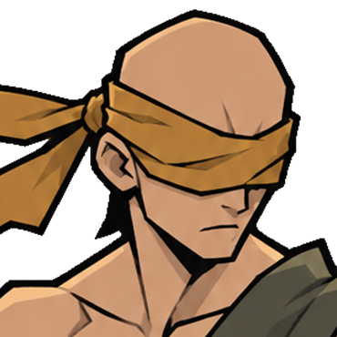
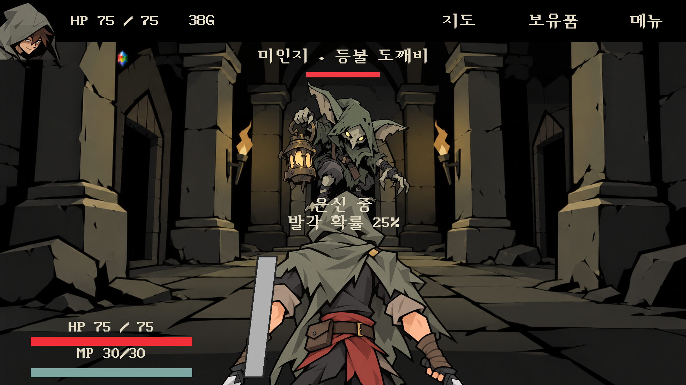
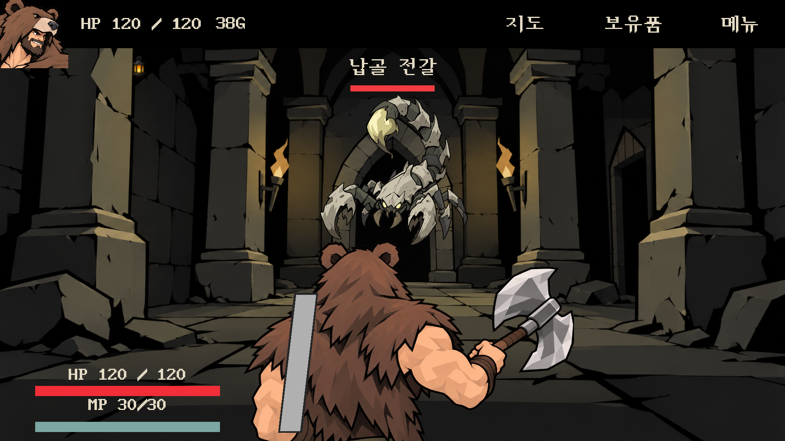

전투 깊이 · 얼굴 초상화
몬스터를 위로 올리고 캐릭터 뒤에서 그리도록 수정했습니다. HUD는 얼굴 중심으로 확대하고 왼쪽 가장자리에 맞췄습니다.
 이전 · 낮은 몬스터 / 앞쪽 겹침 / 상반신 초상화
이전 · 낮은 몬스터 / 앞쪽 겹침 / 상반신 초상화
현재 · 몬스터 높이/깊이 수정 + 얼굴 확대얼굴 중심 크롭 · 여섯 캐릭터






로그 · 왼쪽에 붙는 얼굴 초상화 / 몬스터가 캐릭터 뒤로 가려지는 부분
납골 전갈 · 올라간 배치Unity 확인 기록 · 변경 범위 · 캐릭터 아트